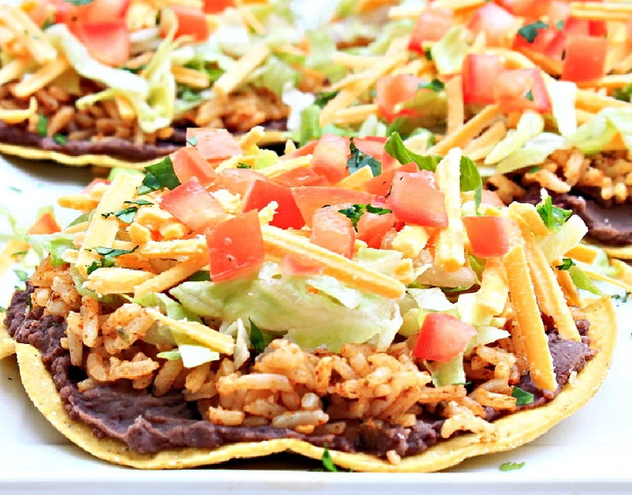

Bean Mix Tostadas
Back to Index

This tostada recipe uses the bean mix recipe supplied on this site
together with simple fresh vegetables to make a tasty, quick, and easy
snack.
Ingredients
- Tostada Shells
- Bean-Mix (recipe link)
- Fresh Tomatos, diced
- Fresh Iceberg Lettuce, chopped or food processed
- cheese (optional)
- Guacamole (optional)
Instructions
-
(optional) Coat the tostada shells with a thin layer of
guacamole
- Spread some bean mix on the tostada shells
- Gently pat some shredded lettuce onto the tostadas
-
Top with diced tomatos and (optionally) cheese